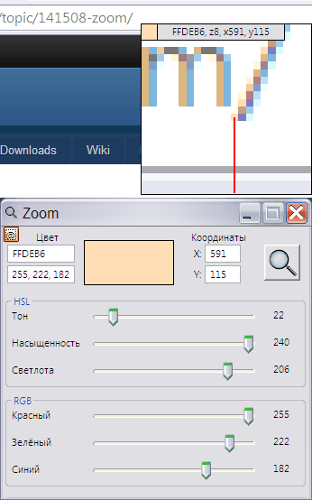

Zoom
Назначение
Лупа с настройками вращая колесо и удерживая модификаторы.

Zoom - утилита позволяет с лёгкостью захватывать цвет с экрана. Колёсиком мыши можно управлять увеличением. При удержании Ctrl или Shift и вращением колёсика мыши можно изменить размер самого увеличителя. Первый запуск активирует увеличитель, для выхода в окно регулировки используйте Esc, повторный Esc - выход из программы. Для точной установкой курсора используйте клавиши клавиатуры - стрелки вправо, влево, вверх, вниз.
Zoom.ini - конфигурационный файл, в котором можно указать некоторые параметры:
Параметры ini-файла Zoom.ini
[Set] ; секция настроек
Clipboard=%c, %x, %y ; строка возврата в буфер обмена, например если указать только %c то в буфер обмена возвращается только цвет, если указать #%c то цвет будет с префиксом #.
SightColor=FF0000 ; цвет прицела, текущий красный
SightWidth=2 ; толщина прицела 2 пиксела (от 1 до 5)
Zoom=4 ; зум, масштабирование, в пределах 2-50, большие значения не сохраняются. Зум сохраняется автоматически при регулировки колёсиком мыши.
Region=40 ; размер области захвата
FirstStart=0 ; для первого старта, чтобы увидеть подсказку.